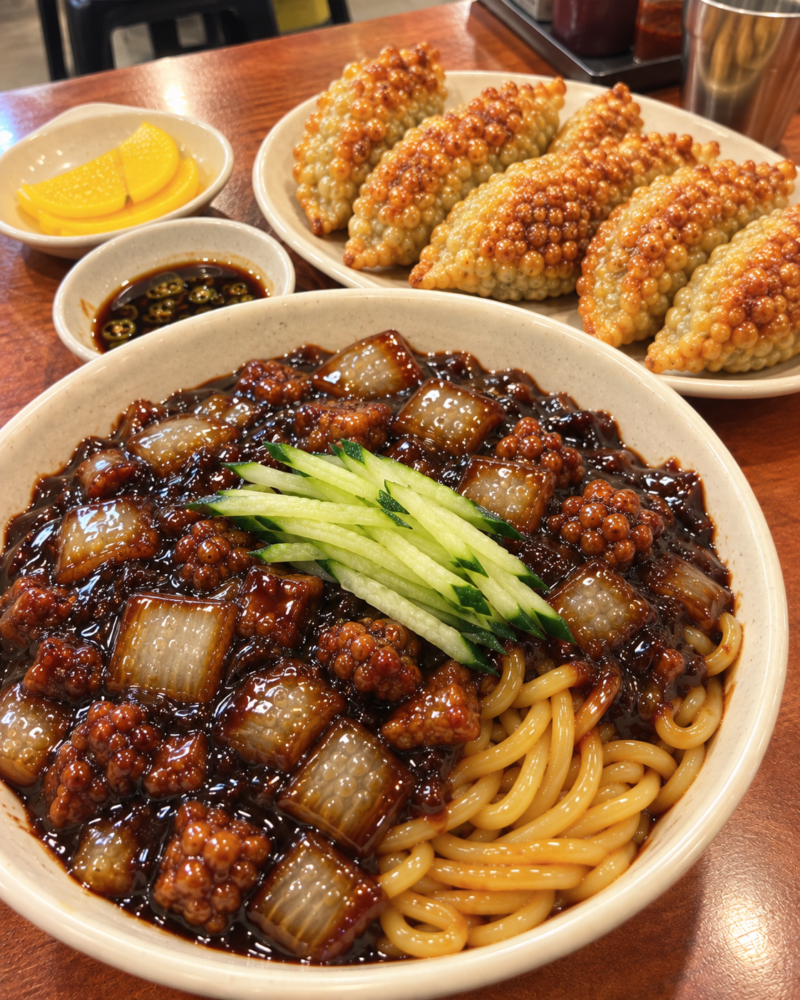
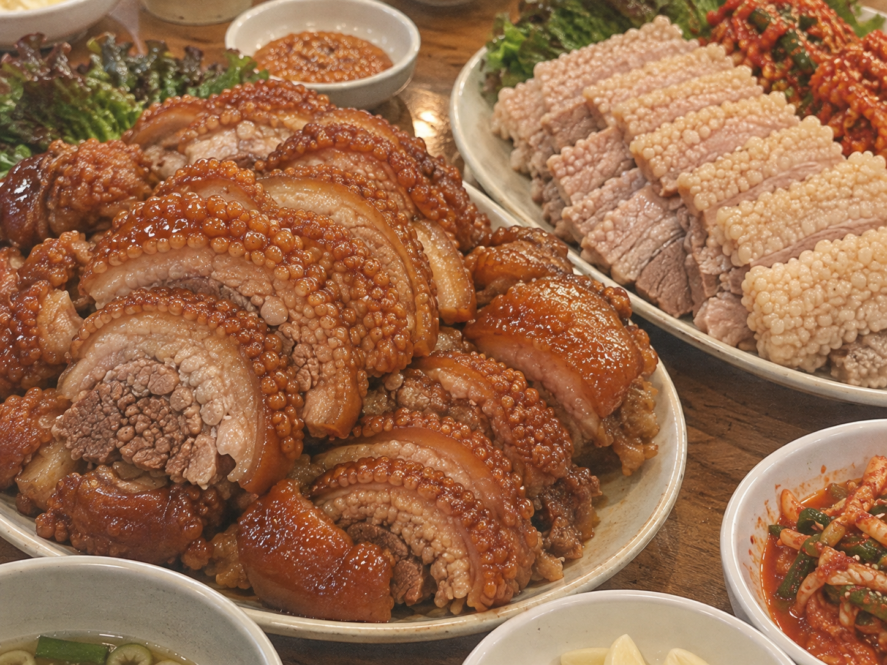

138 · 5 · 13 시간 전 · 원문


군침이 싹.... 정말 맛있겠죠?^^
AI 세계는 정말 무궁무진 한 거 같읍니다😁😁
수집 당시 댓글 5개
스떼이꾸 · 2 시간 전
이거 이토준지 만화에서 비슷한거 본거같은데
해으응 · 1 시간 전
모발이식 머리 막 심었을때 딱 저렇게 생김
금귤 · 1 시간 전
어우 ㅆ바..
보리차온더락 · 41 분 전
습습후후 · 32 분 전
크툴루 고기로 만들었나 ㄷㄷㄷ

이거 이토준지 만화에서 비슷한거 본거같은데